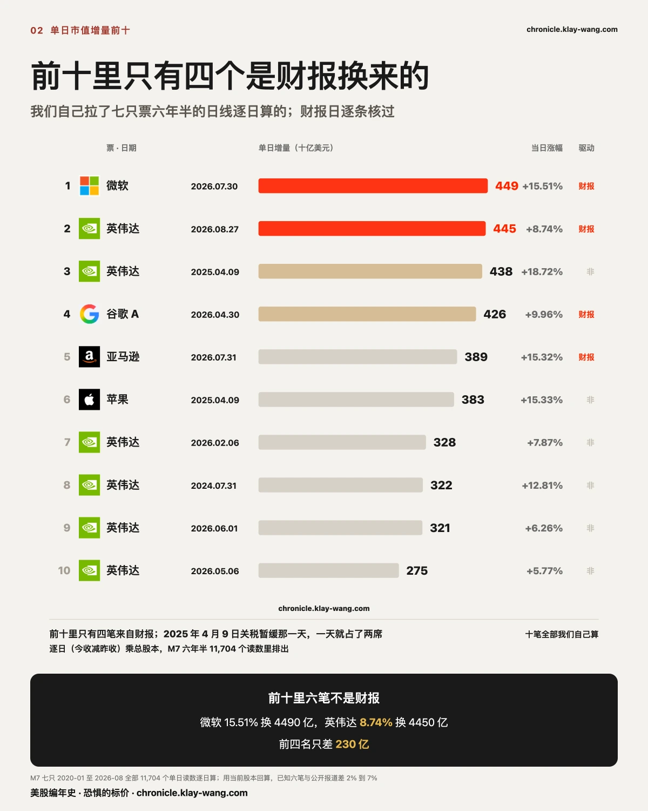
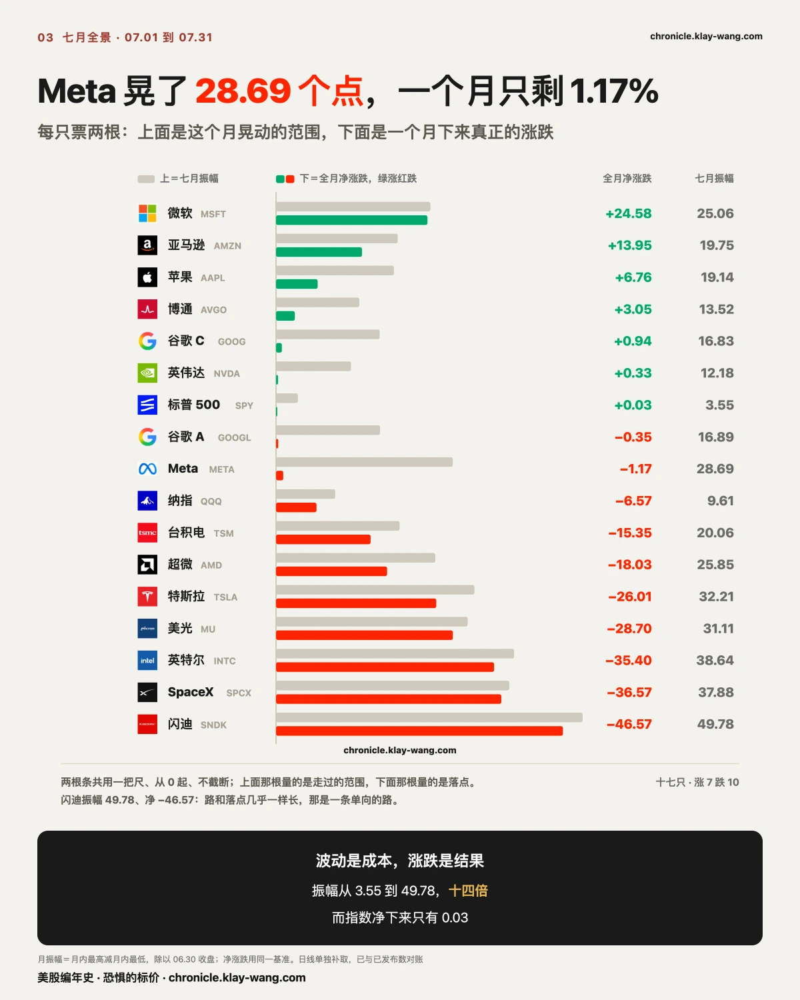
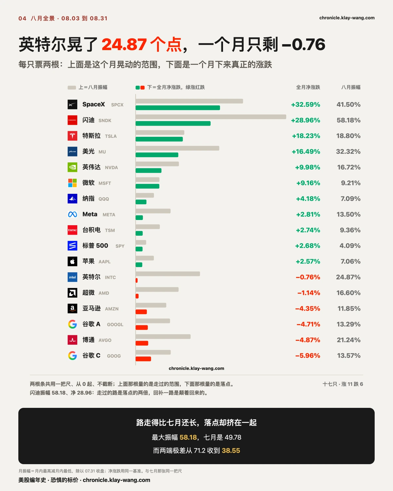
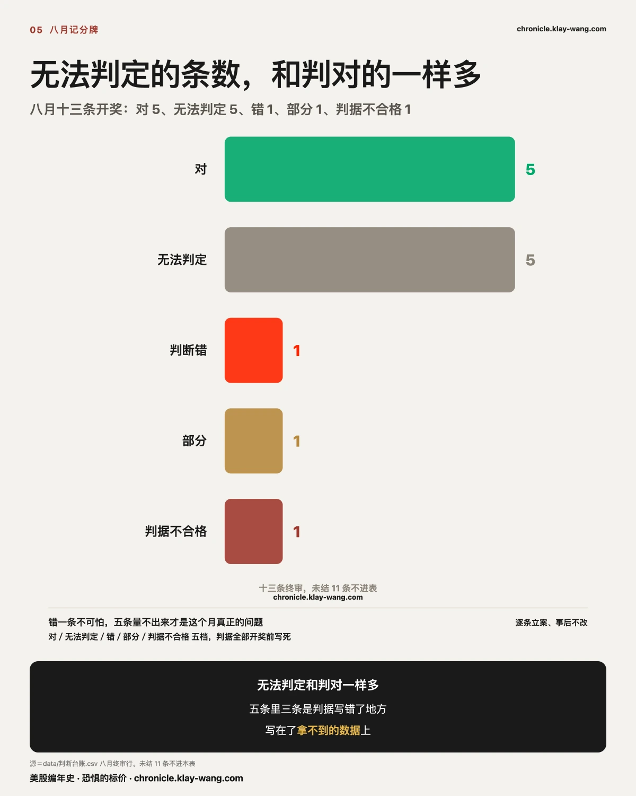
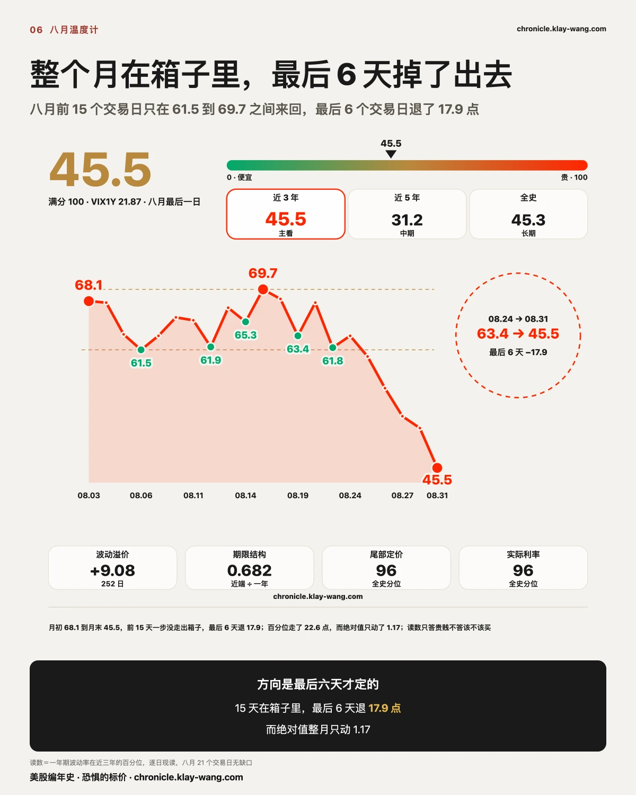
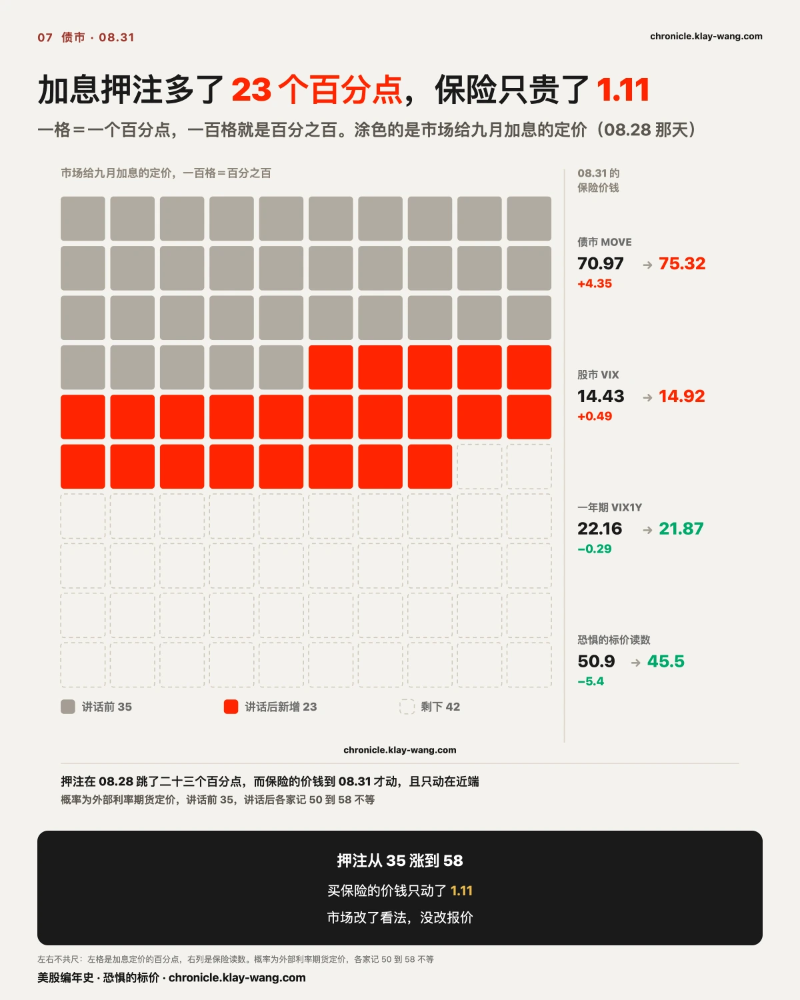

8月美股赚钱了吗？这里面或许有你想要的答案 · 8月收官 & 回顾
三行干货：八月最大的几笔涨幅，买的是七月被打下去的位置
- 八月涨幅榜前四名，全部来自七月跌幅榜前五名。 闪迪七月跌 46.57%、八月涨 22.24%；
SpaceX 七月跌 36.57%、八月涨 30.57%。八月最大的那几笔涨幅，买的是七月被打下去的位置。 - 唯一没跟上的是英特尔：七月跌 35.40%，八月只有 −0.81%。同一组里其余四只全部反弹，它没有。
- 我们八月结了十三条判断：对 5、无法判定 5、错 1、部分 1、判据不合格 1。
错一条不可怕，五条量不出来才是这个月真正的问题，其中三条是我们把判据写在了拿不到的数据上。
〔本月主线〕八月是七月的回补，而市场在同一组里做了区分
七月我们写过一句话：一个 +0.03% 的月份里，有人赚了四分之一，有人少了将近一半。
八月这句话反过来念一遍就是答案。七月跌幅榜前五名是闪迪 −46.57%、SpaceX −36.57%、英特尔 −35.40%、美光 −28.70%、特斯拉 −26.01%。
八月涨幅榜前四名是 SpaceX +30.57%、闪迪 +22.24%、美光 +13.34%、特斯拉 +12.06%。
四个名字，一个不差，全部来自那份跌幅榜。
另一头也对得上。七月涨得最多的三只，八月全部减速或转负：
微软 +24.58% → +10.50%，亚马逊 +13.95% → −1.90%，苹果 +6.76% → +3.49%。
八月是七月的回补。 这个月最大的那几笔涨幅，买的是七月被打下去的位置。
该问的是那段回补还剩多少。
同一组里有一个没跟上。英特尔七月 −35.40%，八月只有 −0.81%，
其余四只平均反弹 19.55%。它跟另外四只一起跌下去，没有跟它们一起爬回来。 这一只把回补这条判断划出了边界。如果八月只是无差别的低位回补，英特尔不该被落下。
它被落下了，说明市场在这一组里做了区分。 七月它们看上去是同一类资产，八月市场把它们分开了。
所以跌多了会涨这句话在这个月是被证伪过的，五只里有一只没兑现。

〔一天四千四百亿〕这份榜上前十里，只有四笔是财报换来的
八月最大的一个最，不在回补那条线上。08.27，英伟达从 209.66 涨到 227.98，涨 8.74%。按 243 亿总股本算，
这一天它多出约 4,450 亿美元市值。
这个榜是我们自己算的。 从券商拉了七大科技股 2020 年 1 月到 2026 年 8 月的全部日线，
复权后逐日算 (今收 − 昨收) × 总股本，共 11,704 个单日读数；
每一笔的财报日再逐条去查，确认它到底是不是财报当天。

前十：微软 4,490 亿（07.30，涨 15.51%）、英伟达 4,450 亿（08.27，涨 8.74%）、
英伟达 4,380 亿（2025.04.09，涨 18.72%）、谷歌 A 4,260 亿（04.30，涨 9.96%）、
亚马逊 3,890 亿（07.31，涨 15.32%）、苹果 3,830 亿（2025.04.09，涨 15.33%），
后面四笔都是英伟达：3,280 亿、3,220 亿、3,210 亿、2,750 亿。
第一件事：前十里只有四笔来自财报
微软 07.30、英伟达 08.27、谷歌 04.30、亚马逊 07.31：只有这四笔，公司是在当天盘前或前一晚发的财报，其余六笔都与财报无关。扩到前三十，三十笔里只有九笔是财报。
最大的那几笔市值增量，多数由业绩之外的东西换来。
其中一天要单独记：2025 年 4 月 9 日关税暂缓，一天之内把四家送进前三十：
英伟达第三、苹果第六、微软第十四、亚马逊第二十三。那是政策把整个池子的水位抬了一次，与哪家公司做对了什么无关。
你在财报前反复推演的那些数字，只解释了这张榜的三成。 剩下七成来自政策、资金面和情绪，
那些东西不在任何一份财报里。所以把研究时间全押在财报上，等于只覆盖了三分之一的战场。
第二件事：涨幅越来越不重要
前四名之间只差 230 亿美元，不到榜首的百分之六。
微软涨 15.51% 换来 4,490 亿，英伟达只涨 8.74% 就换来 4,450 亿：几乎一样多，幅度只有一半。
是底座变大了。 到了五万亿美元这个量级，
一次常规的超预期就能造出接近半万亿的单日增量，史上第二这个说法正在快速贬值。
前十里有九个发生在 2025 年之后，只有英伟达 2024.07.31 那一笔更早；
扩到前三十，2025 年之后占二十四个。榜单在向近处塌陷。
顺带纠正一份公开榜单
自己算完才发现，外部那几份榜漏得很厉害。亚马逊 2026.07.31 那 3,890 亿排第五、
苹果 2025.04.09 那 3,830 亿排第六，在任何一份公开榜单上都没有出现过；
而它们常年挂在榜上的 Meta 2024.02.02（1,970 亿）和苹果 2022.11.10（1,910 亿），
按这份全量算早就掉出前十了。
回到08.27：一天多出四千四百五十亿，而市场为英伟达未来一年的保险只加了 0.66 个波动点。
市值是一天算清的，风险的价钱是一年摊开的，两者从来不同步。
口径说明：范围是七大科技股、2020 年 1 月以来。M7 之外也扫过博通、台积电、礼来、摩根大通、沃尔玛，
最大一笔是博通 2024.12.13 的 2,070 亿，低于本榜第十名的 2,750 亿，不影响前十。
市值用当前总股本回算，历史值会受其后回购与增发影响：拿六笔有公开报道的对账，
偏差全部落在 2% 到 7% 之间。财报归属逐条查自券商和公司财报日历，判据是公司在当日盘前或前一晚发过财报。
〔七月全景〕同样是一个月没怎么动，标普晃了 3.55，Meta 晃了 28.69
要看懂八月这轮回补是从多深的坑里爬出来的，得先把七月那个月摊开。七月十七只，涨 7 跌 10。另一列更要紧：一个月里它们各自走过多远。
振幅最小的是标普 ETF 的 3.55，最大的是闪迪的 49.78，相差十四倍。
标普 ETF 那个月净下来是 +0.03%。
把两列并排放，会看出三种完全不同的一个月：
- 单向的路：闪迪振幅 49.78、净 −46.57；SpaceX 37.88 对 −36.57；英特尔 38.64 对 −35.40。
路和落点几乎一样长，说明它们一路下去，中间几乎没有反弹。
微软是反方向的同一种：振幅 25.06、净 +24.58。 - 来回晃的：Meta 振幅 28.69，净只剩 −1.17；谷歌 A 振幅 16.89，净 −0.35。
它们走了很远，最后回到起点附近。 - 真的没动的：标普 ETF 振幅 3.55，净 +0.03。
涨跌榜把后两种记成同一种。 七月的 Meta 和七月的标普 500 在涨跌榜上都是基本没动，
但一个晃了 28.69 个点，一个晃了 3.55。对拿着 Meta 的人来说，那 28.69 是真实发生过的，中间每一段都有人为它付过钱。
这也是八月那轮回补的起点：八月涨得最多的那几只，七月走的都是单向的路。 再看两个月的极差。七月十七只里最高与最低差 71.2 个百分点，标普 ETF 整月只走了 0.03%；
八月同一张表两端相差 38.55 个百分点，标普 ETF 走了 +2.68%。
极差腰斩，指数从原地不动变成小涨。
这两件事要一起读。七月是指数被两端的极端互相抵消掉，八月是两端自己在往中间收、
指数同时开始往上走。掩体正在变薄。 周回顾里量到的是同一件事的另一个尺度：
周内成分互相抵消、指数表面平静；放到月度，那层抵消撑不住了。
这对你的意思是：七月那种指数没动所以没事的读法，在八月开始失效。
指数动起来的时候，两端反而不再提供对冲。

〔八月全景〕路走得比七月还长，落点却挤在一起
把八月摊开成同一张图：每只票两根条，上面是这个月晃动的范围，下面是一个月下来真正的涨跌。
八月的振幅上限比七月还高：闪迪晃了 58.18%，七月最大的那根是 49.78%。
英特尔晃了 24.87 个点，一个月下来只剩 −0.76%，又一次把路走成了落点的三十倍。
振幅最小的还是标普 ETF，4.09%，最大与最小差 14.2 倍，七月是 14.0 倍，分化的程度没减。
变的是方向。七月十七只涨 7 跌 10，两端劈开 71.15 个百分点；八月涨 11 跌 6，两端收到 38.55。
路走得更长，落点却挤在一起：市场晃得更凶了，但不再往两个方向裂。

〔记分牌·先报错的〕十三条开奖：对 5、无法判定 5、错 1
先报错的那一条。
微软那笔一亿一千五百万是股息套利，我们读成了方向性下注，错了。
除息日08.20，那批单成交在前一天下午两点三十七分；八档行权价 390 到 435 全部深度价内，
当时正股在 483 一线；八档时间戳同为两点三十七分，是一笔不是九笔；持仓随后归零。
错在看见深度价内加巨量加同一到期日就往方向上读，没有先问除息日在哪一天。
判对的五条，对在同一个地方，全部是读资金留下的结构：
美光那笔 800 看涨大宗是高杠杆的方向性下注（到期时买方大额亏损，坐实）；
苹果三期限同打里只有 340 那档需要真涨才回本（到期归零，坐实）；
存储两只08.17的涨幅在盘前就定死、白天只是没有反悔（连续两日两段同号，四组无一反向）；
围栏定价的是往哪边有事（后续三场下半平均用量持续高于上半）；
08.19跌得最狠的四只全部缩量，下跌来自买盘缺席。
七月我们总结过：猜价格往哪走零对二，看懂这笔钱在干什么三对零。八月这条规律没有变。
真正的问题在另一栏。无法判定 5 条，和判对的一样多，而这五条里没有一条是市场没给答案。
- 一条的判据钉在了券商截图上，而那批截图自08.18起到开奖日一张都没有。
判据所需要的输入从未产生，这条判断在物理上就没法开奖。 - 一条要看两条腿的次日持仓，贴价那档查到了（持仓从 1,372 升到 33,721，是新建仓不是换手），
而更低那档当天根本没取到，核心问题无数据可答。 - 一条的原判据是跨尺比较，开奖时才发现两边不同源，只能改判无法判定。
七月的教训是别猜方向，八月暴露的是下一层：判据写在哪。
一条判断的价值，在于它到期那天你手上真的有那个数。
写判据的时候要先问一句：这个数据源在开奖那天一定会有吗。 三条栽在这一句上。这条要改成机制。判据只准落在我们自己每天都一定取得到的那几个数上
（收盘价、当日权利金、一年期报价、温度计读数）。
落在要靠人截图、靠第三方、靠一次性窗口的来源上，就是给自己挖坑。

〔温度计〕整个月在一个箱子里，方向是最后五个交易日才定的
八月这支温度计的形状很干净。
前十五个交易日，它只在 61.5 到 69.7 之间来回，一步没走出这个箱子。
月初 08.03 是 68.1，月内最高 08.17 的 69.7，中间最低 08.06 的 61.5。
最后六个交易日一路退：63.4、60.6、56.3、52.5、50.9、45.5。六天退了 17.9 点，月末收在全月最低。
一年期波动率的绝对值整月只在 21.87 到 23.04 之间，区间 1.17 个点。
百分位走了 22.6 点，绝对值只动了 1.17。 两个数都列出来才不会读成发生了很大的事：
百分位说的是在近三年里排第几，绝对值说的是到底多少钱。这个月排名掉得多，价钱几乎没动。
有人会说：财报影响的是最近那几档到期的期权，你们量一年期，量错地方了。
这里要把两件事分开。
买末日期权的人赚不赚钱，是方向的事。 周四买进、周五股价跳涨 8.74%，
哪怕财报一出隐含波动率就塌下去，方向上赚到的钱也盖过了波动率上亏的钱。他赚了。
而保险贵不贵，是波动率的事。 财报后隐含波动率塌下去，那件事本身就叫保险变便宜了。
买方赚钱和保险降价，是同一件事的两面，不矛盾。 隐含波动率塌缩正是它们同时成立的机制。
我们量的从来是后者：市场给这个风险开的价。
至于近端还是远端：两头我们都给，而且下面这个对照两头都在：
- 近端（现货 VIX，三十天口径）：月初 08.03 15.86 → 月末 08.28 14.43，跌 9.02%
- 远端（一年期 VIX1Y）：22.90 → 22.16，跌 3.23%
近端跌得比远端狠将近三倍。
事件最密的那一周，近端是这样走的：08.24 15.85 → 15.45 → 15.21 → 14.51 → 08.28 14.43。
英伟达财报、个人消费支出物价、美联储主席讲话撞在这五天里，近端一天都没有反弹过。
事件砸下来而保险在降价的证据在近端，不在远端。
一年期那支温度计量的是定价中枢，两者各管各的，谁也不替谁作证。

⟨08.31 收盘后补最后一点，读数与结论均需重看⟩〔债市〕赌加息的人多了近一倍，而保险的价钱到最后一天才动
上一节说近端和远端各管各的。利率那边也有近端和远端，八月最后一周两边给出的答案，
和股市这边是同一个形状，直到最后一天。
先把尺子摆出来。MOVE 之于债市，就是恐惧的标价之于股市：它算的是市场现在花多少钱
给利率买保险，越贵说明市场越怕利率乱动。这张表从 2002 年 11 月起，到八月底 5885 个交易日。
08.28读数 70.97，近三年第 14.8 百分位。过去三年里有八成五的日子，这份保险比现在贵。
那天美联储主席在杰克逊霍尔讲完话，利率期货那边九月加息的押注从三成五跳到接近六成
（讲话前 35%，讲话后各家记的是 50% 到 58% 不等，口径不同，我们并列不合并）。
四把尺子当天是这样走的：股市的恐惧价格 14.51 落到 14.43，一年期的恐惧价格 22.24 落到 22.16，
恐惧的标价读数 52.5 落到 50.9，只有债市的恐惧价格从 69.86 升到 70.97，多了 1.11。
押注跳了二十三个百分点，四把量恐惧的尺子加起来动了不到四个百分点。
最后一天，短端两个市场同时涨价，一年期反而创了全月最低
08.31，十年期美国国债收益率升到 4.75%，是2025 年 1 月以来最高；
三十年期短线走高 4 个基点，报 5.25%。同一天：
| 08.28 | 08.31 | |
|---|---|---|
| 股市的恐惧价格 | 14.43 | 14.92 |
| 债市的恐惧价格 | 70.97 | 75.32 |
| 一年期的恐惧价格 | 22.16 | 21.87 |
| 恐惧的标价读数 | 50.9 | 45.5 |
债市那把尺一天跳 4.35，是八月单日第三大的一次，分位从 14.8 抬到 22.1。股市那把也涨了 0.49。
而一年期那一层反而落到 21.87，读数落到 45.5，两个都是全月最低。
短端在反应，长端在无视。 收益率冲到2025 年 1 月以来最高的那一天，
愿意为最近一个月的利率颠簸付的钱涨了，愿意为未来一整年付的钱反而更便宜了。
外面说债市波动率自六月初以来一路上升，形状对不上
八月底有一篇流传较广的稿子这样写。把那一段逐日调出来：06.01 73.33，
07.31冲到 83.02，然后整个八月一路走低到08.28的 70.97，
最后一个交易日一天跳 4.35，收在 75.32。
六七月是涨的，八月是跌的，最后一天跳回来的。 月末确实站上了六月初，
但走法是先跌后跳，不是一路上行。这两句话差别很大：一路上行意味着压力在累积，
先跌后跳意味着它在等一个具体的日子。
再补一条那篇没说的：近三年 756 个交易日里，MOVE 有 70 天在 120 以上，最高 141.67。
120 不是罕见的天花板，近三年每十天就有一天在上面。今天的 75.32 离那儿还很远。
把宣布和出手分开
08.19，财政部宣布把十至二十年、二十至三十年两段长债的单次回购上限从二十亿提到
至少四十亿，09.09生效，到11.04本轮再融资季末。
到八月最后一天为止，一次四十亿的操作还没有跑过。 市面上有解读把宣布讲成了已经出手、
长端收益率随后立马回落。那是两件事。
有人问会不会加息：我们不猜方向，但市场已经把另一半答案付过钱了
会不会，09.16 到 09.17 那次会议之前的一个非农和一个物价数据会替所有人回答，我们不猜。
但加了之后乱不乱这半个问题，市场已经用四处的钱答完了：
| 在为什么付钱 | 讲话前 | 月末 | 说明 |
|---|---|---|---|
| 为会加息付的钱 | 三成五 | 五成上下 | 利率期货，外部口径 50 到 58 不等 |
| 为利率会乱付的钱 | 12.7 分位 | 22.1 分位 | 债市保险，最后一天才动，仍在全史第 43 百分位 |
| 为长债会跌付的钱 | 常态 | 0.66 | 长债 ETF 期权的看跌对看涨，低于 1＝买涨的更多 |
| 为明年会怕付的钱 | 52.5 | 45.5 | 恐惧的标价读数，月末收在全月最低 |
为会不会付的钱接近翻倍，为乱不乱付的钱一处都没抢。 长债 ETF 的期权甚至是买涨占多：
它的三十天保险排在自己区间第 32.8 位，比我们跟踪的多数科技股还便宜。
再给一个更硬的对照：年底前至少加一次，利率期货几乎完全计价；同一时间一年期的恐惧价格
落到全月最低。市场为一次付了钱，没有为一串付钱。 这句可以拿去吵，
所以把推翻它的条件写上：若九月加息落地后一年期读数三日内抬过 55、或 MOVE 冲上
近三年 90 百分位，说明市场把它重新读成了一串的开头，这一段收回，我们认错。
MOVE 分位在 90 以上的报警，历史上大约八次里中四次。它是仪表盘，不是预测器。
反过来同样成立：22.1 分位不等于没事，只等于现在利率保险仍然便宜。

〔英伟达〕全月涨一成，一年期的保险反而降了三个点
八月它的价格和它的保险，各讲了一个方向。
价格这条线：全月 +9.98%，21 个交易日振幅 16.72%，08.27 财报当天 +8.74%、
一天多出约 4,450 亿美元市值，月末收 220.78，离历史高点只剩 6.66%。
保险那条线整月都在往下走：一年期从月初 42.54 落到 39.41，降了 3.13 个波动点；
三十天保险在自己近期区间的排位从月初第 61.4 位一路掉到月末第 2.0 位。
财报当天那一课我们当天写过：正股 +8.74%，一年期只多了 0.66。
钱的方向也一致到反常：月末收盘那轮短打权利金 1,432 万美元全部是看涨，看跌为零；
九十天以上那层它一只占全场 10.3%，看跌对看涨 0.56，同样偏涨。
这三条线拼在一起是一个很少见的形状：价格创着一年里的大月份，
保险却越卖越便宜，买跌的钱几乎离场。 期权市场把 08.27 那种财报夜从事件降级成了例行公事。
围栏那节记过它这一季的另一面：它是七道里唯一一道拿盘中最高判和拿收盘判会得出相反答案的。
判断：市场已经不再为它的下行付钱，这不等于它不会跌，等于跌下来的时候没有人提前买过垫子。
顺风时这叫共识，风向变时这叫裸奔。收回条件：三十天排位回到 30 位以上、
或某个交易日看跌权利金反超看涨，说明有人重新开始付钱，这段说的反常即告结束。
〔谷歌〕跌了一个月，没人给下跌续保
八月只有六只票下跌，谷歌两股都在里面：A 股 −4.71%，C 股 −5.96%，
指数同期 +2.68%。A 股 21 个交易日里跌了 12 天，月末离历史高点约 17%。
按涨跌榜的读法，它是八月的输家。按期权的读法，几乎找不到给这个下跌下注的人：
- 九十天以上那层，C 股看跌对看涨 0.09，全场最一边倒的偏涨盘；A 股 0.33，同样偏涨
- 月末收盘那轮短打，两股合计看涨约 182 万美元、看跌 17 万
- 一年期保险从月初的 37 一线降到 34.5 一线，三十天排位从第 59 位掉到第 6.4 位
价格连跌一个月，给下跌买保护的钱反而在离场，保险越买越便宜。
市场用钱给出的读法：这一个月的下跌没有被当成一件事的开始，只被当成了一段没人接的空档。
月末还有一条能对上的外部消息：联发科 39 亿美元可转债那笔录得史上最大的海外发行里，
除了英伟达 35 亿，参与方里就有 Alphabet。
判断：跌幅榜上它是输家，期权账本里它是被搁置的票，两边只能有一边是对的。
我们把举证责任放在它还会接着跌的那一边。 收回条件：远端看跌对看涨回到 0.8 以上，
或者一年期保险止跌回升三个交易日，说明有人开始为下行付钱了，这段作废。
〔围栏〕市场给自己开的价，七次里五次不够用
先说清楚这七道栏是什么。它在盘面上有个名字：预期波动幅度，英文 expected move，
多数软件里写作 EM，也有直接叫隐含波动区间的。算法不复杂：财报之前，
覆盖财报夜那个到期档的期权会被重新定价，把那一档平值看涨和平值看跌的报价合起来除以股价，
就是市场认为这只票开奖后大概率会走多远。那是报价：愿意卖这个保护的人必须给一个价，
价一旦成交，就是那一刻的共识。
不管你打算怎么做这场财报，这个数都是你的起点。 买单腿的，它决定你付多少时间价值、
股价得走多远你才回本；做价差的，它就是你两条腿之间那段距离的定价；
卖铁鹰、卖蝶式这类两边都收钱的结构，你收进来的权利金就是按它报的，
而你的两个翅膀架在哪里，等于你在赌股价走不出这个区间。
所有这些结构，盈亏的那条边界线都是拿这个数画出来的。
七大科技股的这七道，七月结了六道，八月结的是第七道，也是最后一道。
总账：五道被干净冲破，一道干净守住（Meta），一道探出去又收了回来（英伟达）。 出栏的五道是两道向上、三道向下。方向不固定，说明宽度本身给窄了。
这个区别决定了它能不能修：方向估错，调一调偏度就行；宽度估错修不了，
它是把整个区间都定小了。 而这一季它系统性地定小了。
所以这本账对你的用处在这里：你在财报前照着 EM 画的那条盈亏边界，这一季七次里有五次不够用。
卖两边收钱的人，翅膀架在栏上等于架在了一个七分之五会被走穿的位置。
英伟达那道 ±5.03%，印在财报前八天，锚 213.05，栏 202.33 到 223.77。
窗口最高 230.47 用掉上半边栏的 163%，08.28收 217.55，回到栏内 6.22 美元。
七道里只有这一道，拿盘中最高判和拿收盘判会得到相反的答案。
规矩七月底就写死在 Meta 那一节：只认结算收盘，因为那是唯一一个不需要我们挑选的点。
〔九月〕九月定价的是他还有没有资格继续鹰
- 09.01 周二 10:00：职位空缺（前值 7.359）· 制造业采购经理人（前值 55.6）
- 09.02 周三 08:15：民间就业（前值 44）
- 09.03 周四：05:30 企业计划裁员（前值 33.429）· 08:30 初请失业金（前值 203）· 10:00 非制造业采购经理人（前值 54.1）
- 09.04 周五 08:30：非农就业
- 09.18：集体换档日。 到这一天到期的仓位会成规模移动，之后所有跨到期日的比较必须重新对尺。
时间一律美东。八月最后一天，美联储主席说金融状况并不具有限制性，而利率是主要工具。
九月第一周整周都是就业。那句话在周五非农被检验一次。
这对你手里的票意味着什么：我们把举证责任判给一边
不给操作建议。但每只票上的钱都在替某一边说话，我们把它翻译出来，并写清什么情况下收回。
手里有闪迪的：八月 +22.24% 是这个月最强的一根，可两个月接起来它仍在七月起点之下。
更要紧的是月末这一天：推它上来的是指数纳入的机械买盘，收盘生效，那只手已经松开；
同一天它期权里最重的两笔新钱，压在现价下方一成的看跌上。
接下来要靠它自己了。我们把举证责任放在继续涨的那一边。
收回条件：失去纳入买盘后一周，它仍收在 1,500 上方，这个怀疑作废。
手里有美光的：同是存储，钱走的方向和闪迪相反。它的新钱在上方加仓，
950 看涨成交是持仓的近三倍，价格离 08.25 高点也只回撤了一成不到。
同一个板块故事，市场只给其中一只续了保。两只并排看，钱偏向这一只。
手里有英特尔的：同组四只平均反弹 19.55%，它 −0.81%，普涨没带它。
它自己的那条故事线也在过堂：靠政府入股与合作叙事推起来的那波在 06.30 见顶，
至今回撤三成七，那笔入股正被股东诉讼挑战，中期选举后还排着听证。
普涨不带它，专属故事在过堂，两条腿眼下都不在自己手里。
市场不愿意先付钱等它，我们也不替市场垫这笔钱。
收回条件：出现它自己的催化并连续两周跑赢同组，这段作废。
手里有特斯拉的：月末那天它涨得最多，而它的钱有一个形状：
看涨阶梯全部挤在九月的日历上，远端只有一笔 2027.02 的 770 看涨算得上新钱；
它未来三十天的保险排在自己区间第 2.8 位，几乎全场最便宜。
市场把它当九月的日历事件在交易，没把它当成长故事在持有。
发布会兑现，便宜的保险是白捡的；不兑现，这个位置连缓冲都没买。方向我们不判，结构要提醒：现在拿着它的人，实际拿的是一张事件票。
手里有微软的：两个月唯一连涨的票，而且是这份稿子里唯一没讲过故事的票：
没有围栏被冲破，没有异常下注，08.19 那笔一亿多是股息套利不是方向。
市场对它没有分歧。没分歧的票不出现在我们的稿子里，对一只票来说，没有比这更好的评语了。
什么都没拿在等进场点的：这个月给出的可复用观察是，极端跌幅之后的回补是有选择的：
同一组五只里，四只反弹、一只没有。低位不构成理由，市场在低位里也做区分。
这篇适合转给认为跌多了自然会涨的人
转给七月在存储和高波动那一组里被打下去的人。八月最强的四只全部来自那份跌幅榜，
但两个月接起来看，闪迪仍在起点之下。反弹幅度和回本是两回事。 转给觉得跌多了自然会涨的人。同一组五只，四只反弹一只没有，英特尔八月 −0.81%。
低位是同一个低位，市场做了区分。
转给这个月看着指数上涨、以为风平浪静的人。极差还有 38.55 个百分点，
指数只告诉你平均发生了什么。
这个月值得带走的三句话：回补、例外、和判据落在哪
- 八月涨幅榜前四名全部来自七月跌幅榜前五名。 八月是七月的回补。
- 唯一没跟上的是英特尔，−0.81%。 低位不构成理由，市场在同一组里做了区分。
- 我们无法判定的条数和判对的一样多，五比五，其中三条是判据写在了拿不到的数据上。
判据只准落在每天必跑的那几张表上。
下月要回访的：每条都写死了判据和唯一来源
下面每条都写死了判据，下月照着量。
回补还剩多少。 本月读数：七月跌幅前五中的四只，八月平均反弹 19.55%，英特尔 −0.81%。
判据：若九月这四只中有三只以上继续录得正收益，则回补尚未走完；
若三只以上转负，则八月那一段记为一次性修复。只看收盘价。
英特尔是不是有自己的事。 本月读数：同组另外四只反弹，它 −0.81%。
判据：若九月它与同组相关性回到同向，则八月只是滞后；若继续背离，则它与这条产业链的联动这一段确实断开。只看收盘价。
判据落点的新规矩生效没有。 本月读数：五条无法判定里三条源于数据源不可得。
判据：九月新立的每一条判断，都必须钉在收盘价、当日权利金、一年期报价、温度计读数这四样里的一样上；
若九月仍有判断因为当天取不到数而开不了奖，则这条机制没生效。
温度计那层箱子会不会重建。 本月读数：前十五日困在 61.5 到 69.7，最后六日退到 45.5。
判据：若九月读数重新站回 61.5 之上并连续三日，则八月末那一段是事件驱动的临时降价；
若在 50 附近横住，则定价中枢确实下移了一档。只看温度计读数。
市场为一次付的钱，会不会变成为一串付的钱。 本月读数：08.31 债市那把尺一天跳 4.35 收在 75.32，
分位从 14.8 抬到 22.1，而同一天一年期落到 21.87、读数落到 45.5，两个都是全月最低。
判据：若九月加息落地后一年期读数三日内抬过 55，或 MOVE 冲上近三年 90 百分位，
则市场把它读成了一串的开头，本月这一段收回认错；若一年期仍压在 55 之下，则为一次付钱这个读法继续成立。
只看一年期报价与债市那把尺。
恐惧的标价：百分位走了 22.6 点，而绝对值只动了 1.17
恐惧的标价指数（Fear-Price Index）· 2026.08.31 · 读数 45.5/100：一年期波动率 VIX1Y 为 21.87，
处于近三年第 45.5 百分位，高即贵。逐日台账与口径 → chronicle.klay-wang.com · 转载注明：恐惧的标价指数 · Market Chronicle
八月它是这样走的：月初 68.1，月内最高 69.7（08.17），最后六个交易日退到 45.5（08.31），月末就是全月最低。
整月绝对值只在 1.17 个点里动，而百分位走了 22.6 点。
期权异动与个股逐日 → chronicle.klay-wang.com/options
温度计读数与两本台账 → chronicle.klay-wang.com
本站不提供投资建议，不预测方向，不做择时。